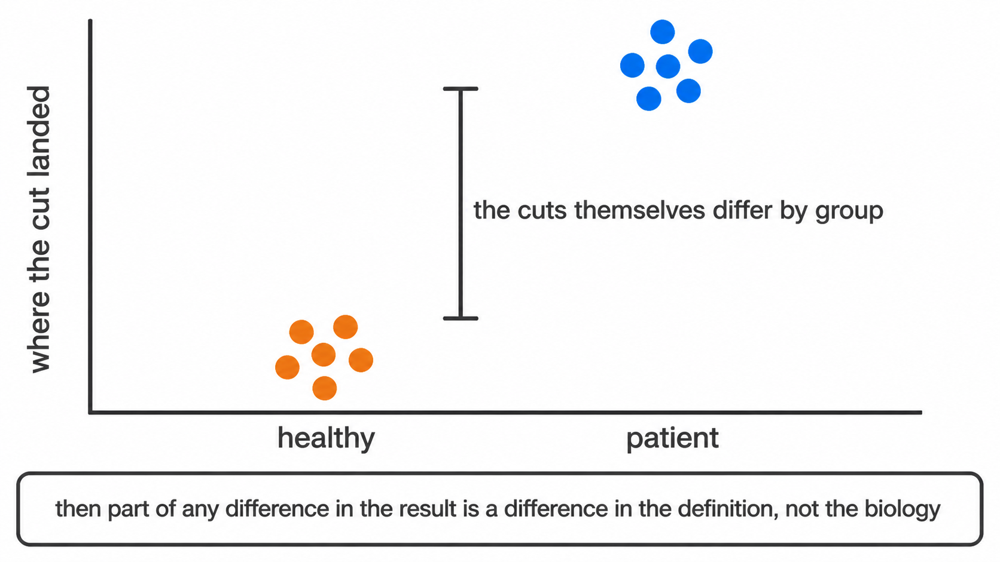
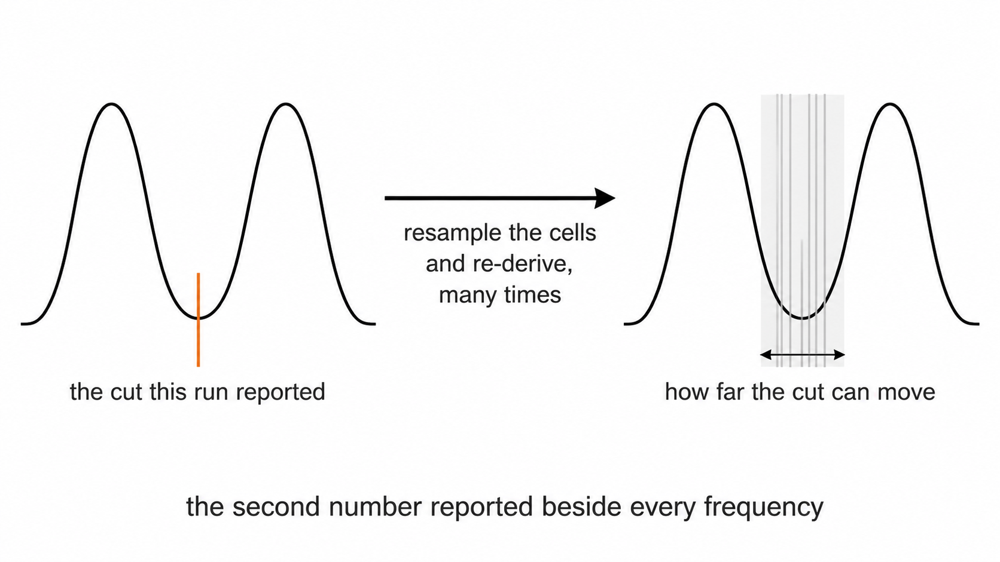
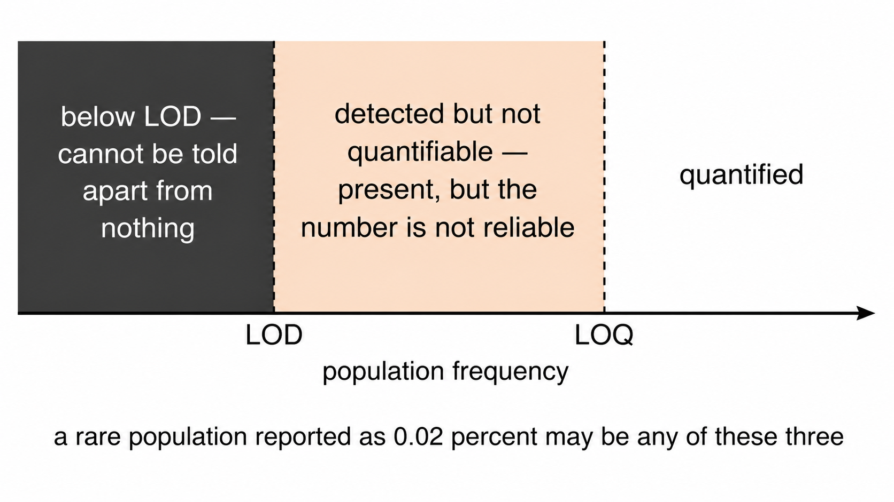
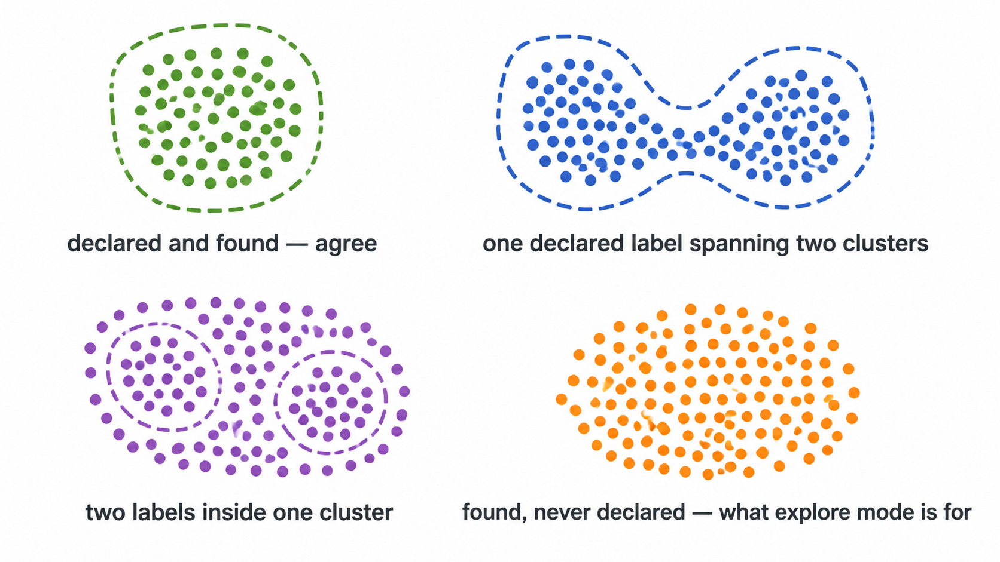
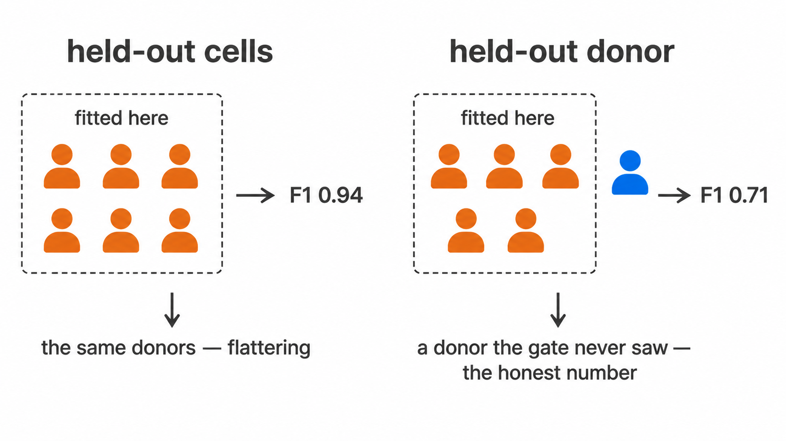
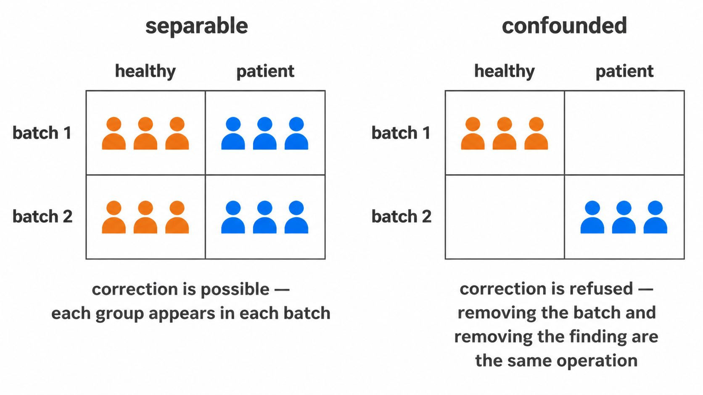

Population labels in cyRAVEN derive from a specification declared before the data were examined. That specification is a hypothesis about how the panel behaves across the batch, and it can fail in ways that a frequency table cannot express. The outputs below exist to detect those failures.
Sections 1 to 3 are sufficient to reject most compromised runs and
should be read first. report.html presents all of them in
this order, embedded in one self-contained file.
0. Before the run: --check
Every check below is applied to a run that has already happened. Some failures are knowable before it starts, from the FCS headers alone: a file the sample sheet has no row for, a specification naming markers the panel does not contain, a group column that does not exist or has one level, a subject whose rows disagree about that subject.
docker run --rm -v "$PWD/data:/data:ro" -v "$PWD/results:/results" \
cyraven:1.0.0 --dir /data/fcs --samples /data/samples.csv \
--config /data/analysis.yaml --outdir /results --checkIt reads keyword blocks rather than events, so it costs seconds
regardless of cohort size, and writes nothing. A marker name that does
not match $PnS exactly is the most common cause of an empty
frequency table, and it is the first thing --check
reports.
Run it after every edit to either input file.
1. Gate inspection
recon_diagnostics.png and gating_qc.png are
written unconditionally and show, per sample, the scatter gate boundary,
the singlet band, and every marker threshold superimposed on the density
from which it was derived.
A threshold placed on a distribution shoulder rather than a minimum is visible here and is not detectable in any downstream table.
1a. Acquisition stability
Every number reported for a sample is derived from that sample’s pooled events, which is correct only if the instrument behaved the same way throughout the acquisition. A partial clog, a bubble or a drift in laser power makes a file two instruments over its run, and one threshold then suits neither half.
acquisition_qc.csv bins the Time channel into
equal-width intervals and tracks two quantities across them: the event
rate, which a clog lowers and a bubble spikes, and each channel’s
median, which catches a shift the rate does not show. Bins are equal in
time rather than in count, because a bin holding a fixed number of
events cannot reveal that the rate changed.
acquisition_qc.png draws the rate per sample with the
flagged intervals marked, and acquisition_qc_bins.csv holds
the per-interval detail.
Nothing is removed. acquisition_qc_impact.csv states how
far each population would move if the flagged intervals were excluded,
and that is the number the decision rests on: a file with a visible
anomaly that moves no population by more than its own gate uncertainty
does not need re-acquiring. Compare pct_delta_if_cleaned
against u_pct_points for the same population before
concluding anything. --drop-unstable-events performs the
exclusion and is recorded in the manifest.
A file carrying no Time channel is reported as such rather than as stable.
1b. Why a threshold did not resolve
Section 1 shows that a cut fell back to a quantile.
spreading_receivers.csv and
spreading_pairs.csv are what distinguish the two reasons it
can have.
Compensation removes the mean contribution of one fluorochrome to another detector. It cannot remove the photon-counting variance that came with it, so a receiver channel’s negative population is wider wherever a spilling source is bright. A widened negative fills the density valley a threshold would sit in, and no gating strategy recovers a minimum that the optics erased.
spreading_pairs.csv reports, for every ordered source
and receiver pair, the ratio of the receiver’s negative spread when the
source is bright to its spread when the source is dim.
spreading_receivers.csv ranks receivers by their worst
source and pairs that against how often the marker actually fell
back.
Read the two columns together. A marker with a high fallback rate and substantial spreading is failing for a panel design reason, and the fix is a different fluorochrome assignment rather than a different threshold method. A marker with a high fallback rate and no spreading is failing for some other reason: too few positive events, a titration problem, or a genuinely continuous distribution. Reporting the fallback rate alone cannot tell those apart.
2. Staining QC
staining_qc.csv records a per-sample verdict. A sample
with no resolvable CD45+ mode contains no usable parent gate;
it is excluded and the exclusion reported, rather than contributing a
spurious frequency to a group mean. Samples declared as controls through
the is_control column of the sample map are excluded from
testing without being recorded as failures.
--include-qc-failed overrides exclusion for
inspection.
3. Phenotype concordance
population_marker_heatmap.png displays marker intensity
against declared populations, z-scored across the run.
In clustering-first analysis this figure assigns identity. Here
identity is already declared, so the figure serves the inverse function:
a column labelled CD4 T cells that does not show elevated CD4 and
depressed CD8 falsifies the gate that produced it. The figure outlines
the markers each population’s specification requires to be positive,
reading the same populations: block used for scoring, so
the audit cannot diverge from the definitions being audited.
cohort_composition_heatmap.png normalises each group to
a common notional cell count before partitioning by population, which
prevents unequal sample numbers or acquisition depth from generating the
pattern.
4. Threshold drift
Per-sample thresholding introduces a specific hazard. If thresholds for a given marker differ systematically between study groups, the populations defined by that marker are not identically specified across the comparison, and any abundance difference is partly definitional.

threshold_drift_stats.csv tests each marker’s per-sample
thresholds against group membership and flags those that separate. A
flagged marker invalidates naive interpretation of every population
depending on it.
No clustering-based method has an equivalent output, because none carries a prior definition capable of drifting.
5. Gate uncertainty
Threshold drift asks whether a cut sits in a different place for one group than another. This asks a prior question: how well is it determined at all.

Each cut is re-derived from resamples of the events it was computed
on, and again across the settings that placed it, and the two spreads
combine in quadrature following the GUM convention.
threshold_uncertainty.csv reports both components.
uncertainty_budget.csv propagates them to each population,
with the CD45 parent gate as a term in every one, since it fixes the
denominator all frequencies are expressed against.
Read bootstrap_valley_rate before
u_combined. A cut recovered in every resample is a
population boundary. One recovered in half of them is histogram noise
that happened to clear the depth rule, and the two are written to
thresholds_used.csv in exactly the same way.
frequency_uncertainty.png places the two quantities side
by side: the spread between samples, and the bar within each. Where the
bars are as wide as the scatter, the variation on display is the cut
moving rather than the biology, and difference_over_gate_u
in the group comparison states the same thing for a tested difference.
Below one, the groups differ by less than the distance the threshold
itself travels under resampling.
The published figures for manual gating are the comparison worth making. Operator studies following the same convention report expanded uncertainty rising from around 12% on a three-gate strategy to around 16% on a five-gate one, with the first gate contributing most of it (Whitmore et al. 2021, Methods Protoc 4:24).
5a. Detection limits
The preceding section asks how well the cut is determined. This asks whether enough cells were counted for the answer to mean anything, which is a separate question with a separate failure mode: a cut through a wide empty gap is well determined however few events lie beyond it.

u_counting_pct_points in
population_frequencies.csv is the uncertainty the frequency
carries from its own event count, and u_total_pct_points
combines it with the gate term. difference_over_total_u in
the group comparison applies the same reading as
difference_over_gate_u against both components and is the
stricter of the two; the two separate exactly where a well-placed cut
sits in front of too few cells.
detection classifies each value against the conventional
twenty and fifty events, expressed as lod_pct and
loq_pct of that sample’s parent gate.
detection_limits.png counts how many samples clear each
limit, per population. Three readings:
A population quantified in every sample is measurable in this cohort.
A population mostly below the limit of quantification is not, and the
gating strategy is not the reason. The numerator is small because few
cells were acquired, so the remedies are a longer acquisition or a
higher --max-events-per-file, not a different
threshold.
A population split across the limit is the case to be careful with, because a group difference in it can be produced entirely by which samples happened to clear the limit.
Both limits are computed against the parent-gate events this run saw, so subsampling raises them proportionally. That is deliberate: it reports the resolution of the analysis that was actually performed rather than of the files on disk.
6. Cluster concordance
--cluster computes a self-organising map clustering of
the same cells without reference to the specification, then
cross-tabulates. Four configurations are diagnostic.

This check clusters WITHIN the parent gate, on the cells the
specification already selected. --explore is the wider
version: it clusters every event in the file over every eligible
channel, so it can also find a population the parent gate excluded.
Under --maybe-learn it writes spec_gaps.csv,
which names declared populations that turn out to span several clusters.
See Explore mode.
6.1 Concordant. A cluster composed predominantly of one declared label. The specification and the data agree.
6.2 Undescribed population. A cluster dominated by the unassigned label. A phenotypically coherent population exists that the specification does not describe. Supervised analysis cannot produce this finding, since it has no mechanism for detecting an entity it never declared.
6.3 Under-specified label. One declared label distributed across several clusters. The definition is coarser than the phenotypic structure. Where the constituent subsets respond in opposite directions, the aggregate frequency reports no change.
6.4 Misplaced threshold. A label containing substantially fewer cells than the cluster it dominates. If CD4 T cells score 0.3% while a cluster comprising 20% of events is CD4-bright and unassigned, the population is present and the Boolean rule is rejecting it. This is the diagnosis a frequency table structurally cannot deliver.
Output: cluster_gate_agreement_clusters.csv,
cluster_gate_agreement_populations.csv.
7. Gate transferability
A gate fitted to one cohort is worth having only if it selects the
same population in the next one. --external-labels takes a
cell labelling produced elsewhere, a cyCONDOR clustering for instance,
learns a strategy for it, and then withholds one donor at a time: the
whole strategy is refitted on the remaining donors and scored on the
donor that was held back.

This is a different measurement from the held-out metric in section 8. Cells reserved from a fit come from the same donors, acquired in the same tubes on the same day, so they share every source of between-donor variation the gate will meet in use. A strategy can score an excellent held-out F1 on cells and still fail on the next patient.
gate_transferability_summary.csv reports the minimum,
median, maximum and IQR across donors. Read the minimum. A gate scoring
0.9 on every donor and a gate scoring 1.0 on nine donors and 0.1 on one
share a median and are not the same gate.
The join between the label file and this run is on sample and event
index rather than row position, because two tools subsample
independently and a positional join relabels every cell without raising
anything. join_external_labels() reports the matched
fraction and declines below a hundred cells.
Output: external_label_gates.csv,
gate_transferability.csv,
gate_transferability_summary.csv, and with
--export-gates, a Gating-ML 2.0 document in the linear
units the FCS file stores.
8. Gate geometry
A cluster index and a cell count are not actionable at the
instrument. --explain-clusters converts an undescribed
cluster into executable gate geometry.
For each qualifying cluster, cyRAVEN selects the two most discriminating markers, fits a convex polygon in that plane, retains the enclosed events, and recurses. The output is the topology of a manual gating strategy and can be reproduced by hand.
Convex polygons rather than rectangles: a conjunction of
one-dimensional thresholds is an axis-aligned rectangle, and CD4 against
CD8, CD14 against CD16, and FSC-A against FSC-H all separate along
oblique boundaries. A rectangle imposed on an oblique boundary must
either admit contaminating events or exclude genuine ones.
derive_singlet_band() is a hand-written instance of the
same geometry.
Every reported metric is computed on events held out of the fit, with the resubstitution value printed alongside. Eight free half-planes can memorise a few thousand events, so the difference between the two quantifies overfitting.
The stage is descriptive. A proposed gate localises events in marker space without asserting that they constitute a biological population. It carries no p-value, and scored frequencies and test results are identical whether it runs or not.
Output: cluster_gate_proposals.csv,
cluster_gate_polygons.csv,
cluster_gate_strategy_<k>.png.
9. Covariates
A variable confounds a comparison only when it both differs between groups and associates with the outcome. Either condition alone is inert, and flagging either alone would raise an alarm on any study with unequal age distributions.
confounding_diagnostics.csv reports both conditions
using tests estimable at small n, and assigns a
confounder_risk verdict.
Adjustment is opt-in and deliberately separated. At single-digit n per group, a model carrying group with age and sex expends most residual degrees of freedom on nuisance terms. Where age is strongly associated with group, as in a syndrome-against-adult-control design, the parameters are not separable at any sample size: there are no young controls from which the age effect can be estimated independently. The adjusted estimate extrapolates beyond the observed covariate range and reports a confidence interval that does not reflect this.
--rank-ancova fits a rank-based ANCOVA where residual
degrees of freedom permit, labelling every row EXPLORATORY.
Where they do not, the output records NOT FITTED with the
reason rather than a value that would appear comparable to the others in
the folder.
9a. Clinical variables, which are the opposite question
--covariates names variables screened as
nuisances: the question is whether a group difference can be
believed in spite of them. --clinical-columns names
variables that are the question: a severity score, a laboratory
value, an outcome flag. Each is associated with every population and
every marker. The same column would be a different analysis under each
flag, which is why they are two flags.
One diagnostic belongs here rather than with the results.
clinical_variables_correlation.png reports the clinical
variables against each other, and is read before the association
heatmap. p-values there are adjusted within each variable on the grounds
that each variable is a separate question; in a cohort where the sickest
patients are also the ones who died, SOFA and 28-day survival describe
one gradient, and a population associated with both is one finding
counted twice. No correction repairs that, and nothing else in the run
would show it.
Read the effect and its bootstrap interval before the asterisk. At
the sample sizes these designs have, an interval spanning zero is the
usual outcome and is the informative part; underpowered
marks every test run on fewer than ten samples, where a null result
carries almost no information.
10. Batch structure
--batch-column names the variable identifying
acquisition batch. Absent that, the $DATE keyword is used
where it varies.

Two quantities are reported and both are required.
10.1 Magnitude. batch_mixing_stats.csv
reports iLISI, the metric against which Harmony is evaluated, together
with a permutation null. The null is necessary because the attainable
score depends on the number and relative sizes of the batches, so an
absolute iLISI is uninterpretable. Permuting batch labels and
recomputing yields the score this dataset would produce under no batch
structure.
10.2 Separability.
batch_group_confounding.csv reports Cramér’s V
between batch and study group. Where patients and controls were acquired
in distinct periods, V approaches unity and batch is not
distinguishable from the comparison of interest.
10.3 Which channel. The two quantities above are properties of the shared embedding. Neither identifies the marker responsible, and a flagged embedding does not correspond to any action at the bench.
marker_batch_drift.csv compares each marker’s
distribution between batches by Earth Mover’s distance, the L1 distance
between their empirical quantile functions. It is reported in analysis
units as emd_max, and divided by the marker’s own pooled
MAD as emd_over_mad, which is the comparable form: a marker
displaced by half its own spread is flagged regardless of the scale it
sits on. worst_pair names the two batches responsible.
threshold_batch_drift.csv is the test in section 4 with
batch substituted for study group. The two answer different questions
and both are needed. A threshold is one number per sample, so it
registers only drift that moves the cut; a marker can change its spread,
grow a tail, or lose the separation between its modes while the density
minimum between them stays exactly where it was. The distributional
comparison sees that, and the threshold comparison cannot.
A marker flagged in either is a statement about the assay rather than about the donors, unless batch and study group coincide, which is what 10.2 establishes and should be read first. Where V is high, neither table separates a reagent lot from the biology.
Correction proceeds only when both readings permit it.
--correct-batch aligns each marker across batches by
monotone quantile mapping; monotonicity guarantees that within-batch
cell ordering is preserved, so location and scale are adjusted without
introducing structure. Above --batch-max-cramers-v
correction is refused, since at that level of confounding removing the
batch effect and removing the biological effect are the same operation.
--force-batch-correction overrides, and the override is
recorded in the run manifest.
--batch-method selects how the alignment is fitted, and
is read only after the refusal has been evaluated, so both methods are
refused on identical evidence. A better alignment algorithm does not
make a confounded design correctable.
quantile, the default, fits one map per marker over the
whole file. That is correct only when the batch effect is the same for
every cell, which it often is not: a shift in a detector moves a bright
population and a dim one by different amounts, so one map fitted to the
pooled distribution over-corrects one and under-corrects the other. A
per-file map also moves with the biology, so it can remove the
difference it was meant to preserve.
cluster fits one map per marker per cell type, which is
the published remedy and the method CytoNorm implements. Two stages, and
the second is not optional: clustering the raw matrix lets a large batch
shift become the dominant source of variance, so the clusters turn out
to be the batches, each holding one batch with nothing to align against.
The clustering is fitted on a whole-file-aligned copy and the
per-cluster maps on the original values. Measured on a synthetic
three-batch shift, the naive form left a mean between-batch gap of 1.296
against whole-file alignment’s 0.003; fitted correctly it reaches 0.014
while leaving the true between-cell-type separation at 3.996 against a
true 3.994, where whole-file alignment inflates it to 4.078.
cytonorm is accepted as a synonym.
The clustering reuses the same seeded, stream-safe routine the
unsupervised cross-check uses, so no dependency is added and a run
reproduces. batch_correction.csv records which method ran,
what it was judged on, and why, including when correction was
refused.
Correction is applied to the shared embedding, the clustering and the gate-cluster concordance. It is not applied to per-sample frequencies, marker medians or the differential tests, which derive from per-sample thresholds and are batch-local by construction. The quantity a batch effect distorts is the single embedding computed across all samples.
11. Conformance
Every check above is internal to one run. This one is not.
threshold_scale_qc.csv compares each threshold against
the other samples of the same panel, which identifies a single deviant
tube. It cannot identify a cohort that moved as a whole, because the
leave-one-out peer median moves with it. After a laser service, a
reagent lot change or six months of drift, every sample can agree with
its peers and disagree with the assay as it was validated.
--write-baseline records where an accepted run placed
each threshold, how variable it was, how often it needed the quantile
fallback, and what the populations came out at. --baseline
measures a later run against that record and writes
specification_conformance.csv with a verdict per marker and
per population.
The baseline holds summaries and the specification text, no event-level or patient data, so it belongs in version control beside the config it describes.
A failure is not a statement that the run is bad. It says the two
runs no longer place their cuts in the same place, so their frequencies
are not the same measurement and should not be pooled until someone has
looked. --fail-on-drift turns that verdict into an exit
code for scheduled runs, raised after every output has been written.
Two results are withdrawn rather than reported. A transform differing
from the baseline’s puts thresholds on a different scale, and a
redefined population is a different population; both read
not comparable, which is not a small drift.
12. Provenance
run_manifest.txt records the R version, platform, the
version of every package loaded at run time, the git commit and
working-tree state where the code was a checkout, the full invocation,
and every option in force. It is written before the expensive stages and
rewritten at completion, so an interrupted run leaves
status: failed rather than an absent or misleading
record.
miflowcyt.md restates the same run against the ISAC
reporting checklist, which several journals check at submission. Its
instrument section is read from the FCS keyword block: cytometer, serial
number, acquisition software, date, operator and event counts per file,
and per panel a detector table giving $PnN,
$PnS, voltage, range and whether amplification was linear
or logarithmic. Its data-analysis section is read from the run, so it
cannot disagree with what was computed.
The two sections a run cannot establish, why the experiment was done
and what the cells and reagents were, are marked
TO BE COMPLETED. An omitted section reads as one that did
not apply. Individual keywords follow the same rule and are reported as
not recorded in the FCS file rather than dropped, since a
missing $PnV or $SPILLOVER is usually the
explanation for something further down.
--no-miflowcyt skips it.